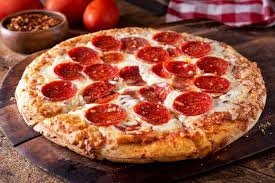

Itlaia
La gastronomía italiana es conocida por su énfasis en ingredientes frescos y de alta calidad, y su influencia sigue siendo prominente en todo el mundo.
Spaghetti

receta
400 g de espaguetis
2 cucharadas de aceite de oliva
1 cebolla mediana, finamente picada
2 dientes de ajo, finamente picados
800 g de tomates triturados (puedes usar enlatados)
1 cucharadita de azúcar (opcional, para reducir la acidez del tomate)
Sal y pimienta al gusto
mas informacion
lasaña

receta
12 láminas de lasaña
500 g de carne molida de res (puedes mezclar con carne de cerdo si lo prefieres)
1 cebolla mediana, finamente picada
2 dientes de ajo, finamente picados
800 g de tomates triturados (puedes usar enlatados)
2 cucharadas de pasta de tomate
1 cucharadita de azúcar (opcional)
1 cucharadita de orégano seco
1 cucharadita de albahaca seca
Sal y pimienta al gusto
500 ml de salsa bechamel (ver receta abajo)
200 g de queso mozzarella rallado
100 g de queso parmesano rallado
Aceite de oliva
mas informacion
Pizza

receta
Masa. Es la base de la preparación y su proceso de elaboración es fundamental para lograr un buen resultado final. ...
Tomate. ...
Mozzarella. ...
Quesos variados. ...
Embutidos italianos. ...
Embutidos picantes. ...
Aceitunas. ...
Champiñones.
mas informacion